strange music page
overseas * * * electro/post rock
#シカゴとか音響派とか呼ばれてる辺り
トータスとかJ.O'Roukeとかです。
CANとかNEU!とかカンタベリの影響受けてそうな電子ポップス達。
最近はエレクトロニカって名前で定着してるみたいですね、どーゆー定義なんだろう？
STEREOLABとかHIGH LLAMASはこっち
|
- GASTR DEL SOL
- Jim O'Rouke
- TORTOISE
- THE RED KRAYOLA
- the sea and cake
- sam prekop
- mice parade
- the dylan group
- international airport
- mouse on mars
- microstoria
- oval
- gel
- DORINE_MURAILLE
- flim
- SILEX
- Kim Hiorthøy
- Rachel's/Matmos
- Rachel's
- Threnody Ensemble
- Sagor & Swing
- Juana Molina
- mono fontana
- Axel Krygier
- apeiron
- TRANS AM
- KOMEDA
- turing machine
- orange cake mix
- v.a.
|
#ホリコシさんの家から購入。
- our exquisite replica of "eternity"
- rebecca sylvester
- the sea incertain
- hello spiral
- the relay
- crappie tactics
- dry bones in the valley (i saw the light come shining 'round and 'round)
- David Grubbs
- Jim O'Rouke
- Steve Braack (horns on 1.)
- Tony Burr (clarinet on 1.)
- Gene Coleman (bass clarinet on 3.)
- Tony Conrad (violin on 7.)
- Kevin Drumm (guitars on 1.)
- Mats Gustafsson (flageolet on 3.)
- Terri Kapsalis (violin on 2.)
- John McEntire (drum kit on 4.)
- Gunter Muller (amplified percussions on 2.4.)
- Jerry Ruthrauf (sax on 5.)
- Ralf Wehowsky (tapes on 4.)
TOY'S FACTORY: TFCK-88786 (1996.8.1)
#Disk Union渋谷にて、定価(\2500)。珍しく最近のCDです。トータスとかオヴァルとかって聴いたこと無いんですけど、このCDめちゃ良いです、なんで今まで買わなかったんだろーとか思ってます。実験的な音楽なのにとてもポップで、最初
Slapp HappyとかPeter Blegvadとかその辺の音楽を連想してしまいました。なんだか醒めかけた夢みたいな実験ポップス。(1999.2.12)
#今気付いたんだけど、"Gaster"って記述してましたゴメン。

- The Seasons Reverse
- Blues Subtitled No Sense of Wonder
- Black Horse
- Each Dream Is An Example
- Mouth Canyon
- A Puff Of Dew
- Bauchrendner
- Jim O'Rourke
- David Grubbs
- Markus Popp (on 1.2.4.6.)
- Jeb Bishop (trombone on 2.4.)
- Steve Butters (steel drum on 1.)
- Edith Frost (vocals on 4.)
- Darin Gray (bass on 2.)
- Maureen Loughname (violin on 4.)
- Rob Masurek (cornet on 1.2.5.7.)
- John McEntire (drums on 1.3.6.7)
- Julie Pomerleau (viola,violin on 2.3.)
- Stephen Prina (backing vocals on 6.)
- Jeremy Ronkin (french horn on 3.5.)
- Ken Vandermark (clarinet on 3.)
P-VINE RECORDS: PCD-5407 (1998.10.10)
#Jim O'Roukeの1997年のソロ作品。ギターのちょっと懐かしげなミニマル音楽、全4曲。近所の中古屋で800円だったので買っちゃいました。
John Faheyってのは成程って気がするような音、ちょっと上品すぎるような気がしないでもないけど。でも確かにイイですね。
オフィシャルじゃないみたいだけど。詳しいですね、こんなにCD有るんだ。(2001.12.5)
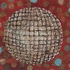
- There's Hell in Hello But More in Goodbye
- 94 The Long Way
- Bad Timing
- Happy Trails
- Jim O'Rouke
- Darin Gray (bass)
- Ken Chanpion (pedal steel)
- Joan Morran (french horn)
- Jeb Bishop (trombone)
- John McEntire (drums)
- Themme Jouis (trumpet)
- Maureen Loughname (violin)
DRAG CITY: DC120CD (1997.8.25)
P-VINE RECORDS: PCD-5408 (1998)
#地元ー、ウチの裏のGEOというレンタル&中古ショップにて、3枚900円コーナー。オバカなお店万歳、こんなの密かに混ぜとく辺り素晴らしいというかトホホというか....とりあえず自分にとっては有り難かったです。(1999.6.8)
- TNT
- Swung from the gutters
- Ten-day interval
- I set my face to the hillside
- The equator
- A simple way to go faster than light does not work
- The suspension bridge at iguaz' falls
- Four-day interval
- In sarah,Mencken,Christ,and Beethoven there were women and men
- Almost always is nearly enough
- Jetty
- Everglade
- Dan Bitney
- John Herndon
- Douglas McCombs
- John McEntire
- David Pajo
- Jeff Parker
- Popahna Brandes (cello)
- Caitlin Horsmon (bassoon)
- Julie Liu (violin)
- Rob Mazurek (cornet)
- Sara P.Smith (trombone)
THRILL JOCKEY RECORDS: THRILL-050
#えーと渋谷のディスクユニオンにて、\700でした。なんだか名前を聞いたような....レーベル、DRAG CITYかぁ、うーん。と2分悩んで買いました。
そんなに面白く無かったように・・・売っちゃいました。
- I'm So Blase
- Duck & Cover
- Duke of Newcastle
- Decaf the Planet
- GAO
- Larking
- Jimmy Two Bad
- Falls
- We Feel Fine
- 5123881
- Hollywood
- Another Song, Another Satan
- Boogie
- Dad
- Father Abraham
- Serenade
- Michael Baldwin
- Werner Buttner
- David Grubbs
- George Hurley
- Lynn Johnston
- Hei Han Khiang
- John McEntire
- Albert Oehlen
- Jim O'Rouke
- Stephen Prina
- Elisa Randazzo
- Mary Lass Stewart
- Mayo Thompson
- Tom Watson
- Christopher Williams
DRAG CITY: DC98CD (1996)
#渋谷のWAVEにあまりに山積みになってたんで、ちょっと躊躇ってたんですけど。買っちゃいました、新譜。
なんだか余白を残したようなゆとりのある音です。生楽器の感触がキモチイイです、微妙に入ってる電子音も。気になってる人は買いましょう、損することは無いと思います。
この辺の人達の音はもう完成形に近いようにも感じました。これ以上の状態ってちょっと想像付かないです。2,3年後にどうなってるか気になります。(2000.10.23)
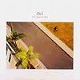
- Aternoon Speaker
- All The Photos
- You Beautiful Bastard
- The Colony Room
- The Leaf
- Everyday
- Two Dolphins
- Midtown
- Seemingly
- I Missed The Glance
- Props Of Upper Class
- Pitch Direct
- Sam Prekop (vocals,guitars)
- Archer Prewitt (guitars,keyboards)
- Eric Claridge (bass)
- John McEntire (drums,percissions,vibes,marimba,keyboards)
- Paul Mertens (saxes,flutes,clarinets)
- Jeb Bishop (trombone)
- Susan Voelz (violin)
- Allison Chesley (cello)
TOKUMA JAPAN COMMUNICATIONS: TKCB-71998 (2000.9.6 - THRILL JOCKEY RECORDS)
#近所にオープンした古本屋にて、\1480でした。
Sea and Cakeのボーカル、Sam Prekopのソロ。やっぱりJim O'Roukeプロデュースだったりしますけど。
ちょっと前から欲しかったCDで、音響派とか関係なくってまったりとしたポップス。いかにもなビブラフォンの音の響かせ方とかも、あまり厭味に聞こえる事はないです。10曲目のストリングスの音が気持ち良くて好きです。
上のとセットでどうぞ。
ちなみに、
CDNOWでの試聴はココです。(2002.1.28)
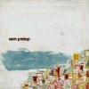
- showrooms
- the company
- practice twice
- a cloud to the back
- don't bother
- faces and people
- on such favors
- the shadow
- sammler rivers
- so shy
- company
- triple burn
produced by jim o'rouke
- sam prekop (vocals,guitars,piano)
- josh abrams (bass)
- jim o'rouke (guitars,bass,electric piano)
- chad taylor (percussions)
- archer prewitt (guitars,vibraphone,keyboards)
- rob mazurek (cornet on 3.6.)
- john mcentire (maracas,tambourine on 10.)
- julie pomerieau (violin,viola on 1.5.10.)
TOKUMA JAPAN COMMUNICATIONS: TKCB-71553 (1999.1.21 - THRILL JOCKEY RECORDS)
#mice paradeのリミックス集。っても「RAMDA」とか聴いたこと無いからフツーに新譜の気分で聴けます。
「mokoondi」から入ったんで、My Bloody Valentineみたいなディストーションかけたギターの音が急に入ってくると、ちょっと違和感が・・・
Jim O'RoukeとCHILD'S VIEWのリミックスが面白いなぁと。別のタイトルにされても多分気付かないよ。 (2003.3.30)
- The Fall from Andalucia (mice parade/him)
- Rain Circle (Adam Pierce/Curtis Harvey)
- Mystery Brethern Vironment (Adam Pierece/竹村延和/アキツユコ)
- Mystery Brethern Vironment (Jim O'Rouke REMIX)
- Mystery Brethern Vironment (CHILD'S VIEW REMIX)
P-VINE RECORDS/After Hours: PCD-4230/AH-008CD (2000)
#八王子のHMVにてインフルエンザかかり気味の体にとても気持ち良く聞こえたので購入。
DYLAN GROUPのドラムのAdam Pierceのプロジェクトで3枚目みたいです。DYLAN GROUPの方すら聴いた事無いですけど。
中身は複雑なリズムパターン(テクノのリズムを生ドラムで叩いたような)の上を生楽器の旋律が繰り返し繰り返しと言った感じの音です、シカゴ系にありがちな電子音響はほとんど聴けません。
Cheng(中国の琴みたい)とかドローン系の楽器が多用されてるみたいですけど、妙にエスニック趣味な音にはならずに飄々とした感じでした。残響音を生かしたサウンドスケープは少しひんやりとした感触で、とても気持ち良いです。何故かちょっとDavid Cunninghamを思わせるような部分があったり。
実験的要素が多かったり冗長な部分が多いような気が(このCD、70分以上)しましたけど、結構気に入りました。ヘッドホンで聴くよりスピーカーで聴いたほうが気持ち良いみたいです、9曲目の唐突にホーンが入ってくるところとかカッチョイイです。
ちょっと8曲目のドラムにディレイかけた処理のヤツだけはあまりかっちょ良いとは思えなかったですけど.....昔の怪獣映画のサントラみたいで。(2001.3.4)
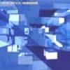
- open air dance
-
-
- into the freedom world
-
-
- circle 1
- pursuant to the vibe
- mokoondi
- ramda's focus
- circle 2
- the castaway team
- man on the beach in the brazil
- "galileo's feedback" mixed by doug scharin
- Adam Pierce (drums,cheng,rhodes,guitars,vibes)
- Carlo Cennamo (sax on 4.5.6.)
- Dorothea Tachler (violin on 7.12.)(voice on 12.)
- Marc Wolf (guitars on 8.)
- Dylan Cristy (vibes on 8.)
- Herman Wright (sax on 9.)
- Helen Ann Shea (gourd rattle on 9.)(add'l drone guitar on 12.)
- Tyler Pistilli (vibes on 12.)
Bubble Core Records: BCD-033 (2001)
P-VINE RECORDS: PCD-24058 (2001.2.25)
#Adam Pierce(drums)とDylan Christy(vibraphone)のデュオ、これが1stですね。ある程度想像つくような音ですけど、ビブラフォンの残響を効果的に残したような音。響きは気持ちいいです、ただちょっとリズムが単調っていうか・・・魅力無い感じのドラム。
「Dylan & Adam 2」はKing Crimsonの1stの「Moon Child」後半のもやーっとした即興部分に似てて可笑しい、「We Are The Music Makers」Aphex Twinのカバー、最後は何故か「イパネマの娘」これは妙にフツーでほっとします。(2002.12.21)
www.bubblecore.com
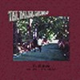
- Bittersweet
- Dylan & Adam 2
- gazer=[(shoe)(star)]2+beat
- We Are The Music Makers
- Scoober, Meet Harry
- Sandcastles
- Time Displacement (life cycle version)
- Decay
- 3'09"
- The Girl From Ipanema
- Dylan Christy
- Adam Pierce
- Rob King (rhodes on 10.)
- Scott McGovern (ship's bell,cappuccino machine on 5.)
Bubble Core Records: BC-015 (1997)
P-VINE RECORDS: PCD-5538 (1999.8.25)
#インド旅行中に会った人から聴かされて、とても気に入ってて「日本に戻ったら買おう」とか思っていたCDです。
渋谷タワレコへ行ったら一発で置いてありました、さすが日本。
一曲目を聴いたときに「
ワールドスタンダードっぽいなぁ〜」なんて思ってたんですけど、パステルズとか関連のバンドだったみたいですね。ミックスはトータスのJ.McEntireみたいです、うーんやっぱり俺の気に入る音ってどっかで絶対繋がってるみたい。
で、このバンドですが、Tom Crossleyってグラスゴーの人でパステルズのサポートメンバーみたいです、他はベル&セバスチャン関連の人とかみたい。
人生悟りきっちゃったよーな歌モノの曲よりも、何だか力の抜けたインストの曲の方が良い感じなように思います。やっぱりSEA AND CAKEとかにも似てるような気もしますが、もっと素朴な感じのセンスです。(2001.8.23)
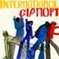
- western
- moving water
- mountain music
- primo or dutch
- a vale of twisted sendal (うす絹織りの谷)
- remnant kings
- de menging van bruin en groen (茶色から緑への変化)
- does chocolate live here ? (チョコレートはここに住んでいますか?)
- gold strike
- icerink
- melodica #2
- cyclionic lanes
- strident hi fi
- una stanza vuota (空っぽの部屋)
- melodica #1
- Aki Okauchi (bass,cello,guitars,vocals)
- Ali Roberts (chanter,electronics,percussions,piano,tarang,violin,vocals)
- Annabel Wright (bass,piano,vocals)
- Cari Anderson (chord organ,melodica,drums)
- Julie Greene (drums)
- Robbie Wilson (guitars)
- Stephen Aston (guitrs,melodica,vocals)
- Tom Crossley (bass,chord organ,drums,electronics,flute,percussions,guitars,mandolin,melodica,piano,toy clarinet,vocals,xylophone)
P-VINE RECORDS: PCD-23087 (2001.4.10 - GEOGRAPHIC)
#ちょっと聴いてみたかったマウス・オン・マーズ、堀越さんからデニーズのメシで購入しました。
知らなかったんですけど、ドイツの人達だったんですね、良く見れば1曲目のドラムは元KRAFTWERKのw.flurでした。
面白いといえば面白いんですけど、この手の音って最近結構流行りになってるような気もしますね。
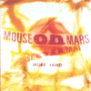
- stereomission
- kompod
- saturday night worldcup fieber
- schunkel
- gocard
- kanu
- bib
- schlecktron
- preprise
- papa, antoine
- omnibuzz
- hallo
- die innere orange
- bib (lomo mix)
- andi toma
- jan st.werner
- wolfgung flur (drums on 1.)
- dodo nkisi (drums on 1.4.6.7.)
- sugai nobuko (voice on 1.)
- bodo staiger (pedal steel on 10.)
徳間JAPAN: TKCB-71278 (original release 1995)
#4枚目です、前のアルバムよりも生っぽい触感。KRAFTWERKみたいな音に加えて
NEU!みたいな気持ちの良いビートか入っていてとても楽しいです。
このアルバム出す前に
STEREOLAB/DOTS AND LOOPSをプロデュースしてるみたいですね。そんな訳で13曲目にはステレオラブの女性二人が参加。
(2001.10.9)

- sui shop
- juju
- twift shoeblade
- tamagnocchi
- dark FX
- scat
- tux & damask
- sehnsud
- X-flies
- schnick schnack meltmade
- rondio
- maggots hell wigs
- cache coeur naif
- glim
- Andi Toma
- Jan St.Werner
- John Frenett (bass on 4.)
- Laetitia Sadier (vocals on 13.)
- Mary Hansen (backing vocals on 13.)
徳間JAPAN: TKCB-71216 (1997.8 - too pure)
#どーも元々映画の為の映像だったようです。が、映画音楽としてはボツになって、さらにその映画自体がお蔵入りになったよう、何のこっちゃ。
autoditackerみたいな突き抜けたポップさは無くって、どっちかというと非常に地味な感じですけど、ヘッドホンで聴いてると細かい仕掛けが沢山有って面白いです。とても微細な感じ。
エレクトロニカとか音響派とか呼ばれてる人たちの中ではやっぱ頭ひとつ抜けてイイよに思います。(2002.11.9)
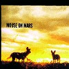
- port dusk
- grindscore
- snap bar
- tankpark
- mood leck backlash
- rerelease hysteresis
- pool, smooth and hidder
- flim
- tiplet metal plate
- hi court low cut
- funky tiste
- starroom
- litamin
- heizchase nailway
- glim
徳間JAPAN: TKCB-71440 (1998.8.26 - sonig)
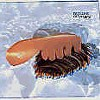
- download sofist
- yippie
- mykologics
- gogonal
- diskdusk
- pinwheel herman
- dispothek
- albion rose
- tensual
- distroia
- boosc
- mompou
- wald f.x.
- andi toma
- jan st.warner
- dodo nkishi (drums)
- f.x.randomix (digital soundprocessing,sample support)
- harald "sack" ziegler (french horn,brass arrangements)
- perry white (bass clarinet,flute)
- scott white (cello,violin)
- matty arouse (fiddle,broom bass)
- markus dirk (bass trumpet)
- topo (saxophone)
徳間JAPAN: TKCB-71722 (1999.11.25 - sonig)
#oval(markus popp) + mouse on mars(jan st.werner)です。これは3枚目で、「niun niggung」と「ovalprocess」の少し後に出たCDです。
音響系のパブリックイメージってこんなんかな？とか思うような感じ。メロディーもビートも無い中を電子音とか生音のサンプリングが色んな角度から聴こえてきます。単体の作品として聴くにはちょっとツライ感じ、美術館の中とかで流れてそう。
mouse on marsのポップさは遥か遠くの方で少しだけ聴こえるみたい。音の質感は違うけど、なんとなく後期の
CLUSTERみたいな感じもします。
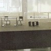
- me-too-module
- glocky bit
- kontra
- fakeshift
- flexen
- men.brand
- artik
- soso sound
- paro fadeout
- fantasy wars
- inhouse_auszeit
- markus popp
- jan st.werner
徳間JAPAN: TKCB--72016 (2000.9.27)
#ovalの3人組時代の1st、Ata Tak（DAFとかDer Planとか出てた所）から出てたんですね。
クレジット見るとプロデュースにKurt Dahlke(PYLORATOR)の名前が有ります。近年の音響系にも80年代のドイツエレクトロからの影響が有るのかな？と思わせるような人の繋がり。まぁ似てるような音有るしなぁ。
んで、これは最近のovalからは想像も付かないような感じで、ビートも有ってメロディーも有ってその上なんだかドイツ語で歌ってます。gastr del solとかtortoiseみたいな飄々とした感じでなくて、80年代っぽいエロくて気持ち悪い感じの歌です。CLUSTER & ENOでBrian Enoが歌ってるよーな感じの曲。はっきり言って変。
80年代ドイツニューウェーブから90年代音響系という流れの中の変容中の音みたいです、やっぱドイツ人ってヘンです。
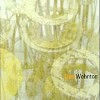
- Hallodrauben
- Delft
- Woistdie Stadt?
- Allesin Gedanken
- Babylon
- Bolien
- Alleswirdgrober
- Nochgestern
- Andere Farbe,neue Farbe
- Kardamom
- Voller Tisch
- Von Nicht-Wollennach Nicht-Konnen
- Theoriebahn
- Eine Melodie
- Cosmos
- Buntstift
- Allesin Gedanken
produce by Oval,Kurt Dahlke,Frank Fenstermacher
- Frank Metzger
- Sebastian Sochatz
- Markus Popp
Ata Tak: EFA03761-2 (1993)
#弟の持ち物、フランスのエレクトロみたいです。情報あんまり無いんですよね、
ココくらいかな？フランス語だけど。
mouse on marsとかみたいな感じのエレクトロなんですけど、全体的に柔らかい感じの音で、ほんのりと気持ちのイイメロディーが聞こえてきます。こーゆーのには弱いです、好きです。mumとかにも似てるかな？
ちなみにジャケットには可愛いお姉ちゃんの写真が載ってますけど、ライヴ行った弟によると
男二人だそうです。残念。(2002.5.13)
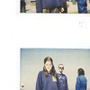
- dolozal
- aux chiens ecrases
- quand je le fais je suis une fille
- re (a/c) h'
- meme pas prete
- j'ai pas lu bataille mais j'ai gagne la guerre
- mekeles
- pauze
- re (a/c) h' (suite)
- violente
- les nerfs (2)
ARTEFACT: ART39CD (2001)
#GELの変名ユニット（らしい）のアルバム。基本線は変わらなくて、柔らかな感じのエレクトロです。子守唄みたいな女性のボーカルが印象的かな。
音の断片組み合わせてモザイクみたいな音ですけど、ちょっとカットアップが多用されすぎなよーな気もします。もーちょい1曲の中での統合した流れが欲しいなぁ。でもこの人たちの音の触感は好き。(2003.3.8)
www.fat-cat.co.uk (レーベル)
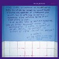
- Le supplice de la baignoire
- Dopees
- Toi, meme, parfois, tu gagnes
- Bbra Allen
- Madrague, ratour
- Les docteurs que j'emmerde
- Muraille_1
- Triviana, nuire
- Se flinguer/piquer une Porsche
- Muraille_2
- Ils cherchent pour voir si le mec est a la hauteur
- Muraille_3
- Rapare
- La trentaine qui fait de toi une loque
- Alexia
fatcat RECORDS/splinter series: FAT-SP05J
#えーとtomlabとかでリリースしてるドイツ人Enrico Wuttkeのソロプロジェクト。スペインのレーベルからで500枚限定だそうで。
電子音バリバリでも細やかなサウンドエディットがされてる訳でも無いのですけど、ミニマルな感じと残響音がイイです。ピアノの音の残り方とかイイなぁとか思います。一人ユニットだと思うんですけど、ドラム入りのジャズロックみたいな曲も有ったり、軽ーくドラマチックなオルガン曲有ったりで面白いです。ちょっと内省的な雰囲気が濃すぎるよーな気もするのだけれど。(2004.3.15)
（→
turbofisch.de mp3有）
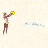
- Murmur Room
- Lime
- Current Description
- Above Seagulls
- Home
- No Guitars Please
- Ecstatic Brown
Plinkity Plonk Records: plink-012 (2003)
#ジャケ買い（\980）エレクトロニカの人っぽい。淡々たミニマルなんだけど、ストイックすぎる訳でも無くてほのかにポップなのがイイ感じかな。遠くから聞こえてくる幽玄な感じのピアノ＋音響とか、ありがちな気もするけど割と聴けます。
FLUXIONの別名義らしいけど、どっちにしろFLUXIONも知らん。
レーベルのサイトも情報無さすぎな感じですけど、この人がやってるレーベルみたい。(2003.6.19)
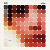
- SILON
- HOLDER
- VELOT
- NOEM
- RETOR
- GLO MO
- DIMOR
- CLONE
- BION OUTER
VIBRANT MUSIC: VMD-4 (2002)
#タワレコ渋谷の6階マニアックコーナーの試聴機にて。ノルウェーの人みたいです、デザイナーだとか。
一曲目が思いっきりmouse on marsっぽくって可笑しかったです。なんかか構造はテクノなんですけど、素材がアナログな感じで面白いです。あんまり音数詰めこんでない、ちょっと引いた感覚が有るのもよろしい感じ。
室内楽みたいな雰囲気を感じるような曲も有るわりには、思いっきり「ツッチーツッチーツッチー」ってリズムの曲も有ったり。でも、ちょっと散らかったような中にも、暖かい雰囲気が見え隠れしてて結構好きになりました。突出した所の有るCDではないんですけどね。(2001.11.28)
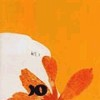
- POLITISKA DIKTEN ÅTERVÄNDER
- FORSKJELLIGE GODE TING
- DEN FULA SKOGEN BAKOM KÖKET
- TORTURE HAPPINESS
- JAG FINNS INTE MER
- JULI
- TECKNINGAR OCH FOLK
- DET VIGSEN KALLELIGE VED DET SOMER GJORT OG MAKTEN TIL Å TILGT TIL Å TILGT
- GIVING AND TAKING BOOK
- DET SKULLE VARA FINT ATT SE DIG, TÄNKTE JAG
- HÄNGER LÅNGSAMT I LUFTEN
- -
- HIP HOP IS A WAY OF LIFE
- HAN BRYDDE SIG INTE OM ATT STIGA UPP, HELA DAGEN LÄT HAN NYA BILDER OCH FUNDERINGAR KOMMA OCH GÅ SOM DE VILLE, SON LITE IBLAND OCH VAKNADE IGEN OCH VISSTE INTE ALLS VEM HAN VAR. DET VAR EN FRIDFULL OCH MYCKET SPÄNNADE DAG
- Kim Hiorthøy (written,performed,produced)
Smalltown Supersound: STS-046 (2000)
#弟にMatmosとのスプリットを聴かせてもらって、気になっていたRachel'sってバンド。早速CDを買ってきました。国内盤もP-VINEから出てるみたいですけど、輸入盤しか売ってなかった。
Rachel Grimesを中心としたアメリカ/ルイヴィルのバンドのようです。音の方もやっぱりRachel Grimesのピアノを中心にした室内楽的な音です。んでもリズムとか音の処理とか電子音とかは音響ポップスを通過したセンスを感じます。
ちょっと暗めのドラマチックな曲に、微妙に被さってくるノイズ。もう個人的にはツボにハマリまくりです、他のアルバムも探します絶対。
そいえばエレクトロニカとかのくくりでしか紹介されてないみたいですけど、この音は完全にプログレだと思います。Art ZoidとかJurverneとか
Anglagardとか、あと日本の
Zypressenとかみたいな。
あの辺好きなら絶対ハマるのではないかと、プログレの視聴機に入れておいたらかなり売れるんじゃないかと思うんですが、どーでしょうか？(2003.3.11)
- A French Galleasse
- On Demeter
- The Last Night
- Kentucky Nocturne
- Honeysuckle Suite (Sugar Maple - Elm -Sweetgum)
- Artemisia
- Old Road 60
- An Evening of Long Goodbyes
- Cut the Metal Cold
- The Mysterious Disappearance of Louis LePrince
- Forgiveness
- Hearts and Drums
- Steve Buttleman (trumpet)
- Giovanna Cacciola (vocals)
- Kyle Crabtree (percussions)
- Dominic Johnson (viola)
- Eve Miller (cello)
- Edward Grimes (drums,vibraphone)
- Rachel Grimes (piano,keyboards,harpsichord,vocals)
- Christian Frederickson (viola,keyboards,accordion)
- Gregory King (percussions)
- Jason Noble (guitars,bass,keyboards,percussions)
Quarterstick Records: QS55 (1999)
#弟の持ち物・・・何だか良くわかんなかったんだけど、MatmosとRachel'sのスプリットシングルみたいです。
Rachel's の自分の曲のセルフミックスとMatmosがミックスした曲が収録されてます。もう、とーにーかーく一曲目が物凄く綺麗。緩やかなノイズの上にギター、ピアノ、チェロ等の生音重ねてく感じで、
UPGRADE & AFTERLIFEの頃のGASTR DEL SOLにも似てますけど、曲の輪郭がはっきりしていて物語が有るような感じで。個人的にはかなり気に入りました。
Rachel'sって名前も知らなかったんですけど、
ココによると結構CD出てるみたいですね、P-VINEから日本盤も出てるみたい、買ってみようかな。(2003.3.8)
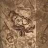
- Full on Night (Recension Mix)
- The Precise Temperature of Darkness
- Christian Freederickson (viola)
- Edward Grimes (drums)
- Rachel Grimes (piano,organ)
- Dominic Johnson (viola)
- James Noble (guitars,tape)
- Gregory King (8mm fireworks,floods)
- Eve Miller (cello)
- Drew Daniel (sampling,sequecing,digital editing)
- M.C. Schmidt (bowed acoustic guitar,mix)
Quarterstick: QS69 (2000)
#ジャケットとバンド名とクレジットだけ見て買ったCD。
なんかRachel'sみたいなのだといーなーとか思って買ったらRachel'sみたいな感じの音響系室内楽。
Rachel'sみたいに神秘的な感じはそんなにしないんですが、ミニマルとかノイズの影響がチラホラ見え隠れしてて幅広い感じ。ノイズとかオルタナを通過した人たちがこーゆー音に行き着くってのは面白いかもね。プログレとは別の所から発生したシンフォって言うか。
ちなみに情報無いかと検索したら「Rotter's Paper」ですでに紹介されてました。むー流石だなぁと。(2003.8.6)
- ThaRoman (formerly Valerie White) Part I
- ThaRoman (formerly Valerie White) Part II
- ThaRoman (formerly Valerie White) Part III
- Somewhere Near Denton
- The Machine
- Tension as Opposed to Tension
- Dave Cerf (guitars)
- Erik Hoversten (guitars)
- Dominique Davison (cello)
- Martha Bausch (piano)
- Amy Domingues (cello)
- Harrison Haynes (percussions)
- David Jordan (clarinet)
- Merritt Partridge (percussions)
- Margaret White (violin)
All Tomorrow's Parties: ATPRCD4
#近所の古本屋で購入。あんまり頭良さそうな感じの音じゃないです。
ロックの方からテクノに近づいて行ってるような音なんですけど、洗練されてないって言うか、荒いっていうか。インダストリアル系にもちょっと近いようなガシャガシャした音です。
なんだかその無茶な感じが魅力と言えば魅力かな？これの次のアルバムの白地に黄緑のジャケットのヤツはもうちょい洗練されてたよーな感じでした。
ここがオフィシャルなのかな？
CDNOWで試聴
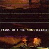
- Armed Responce
- Prowler '97
- The Campaign
- Access Control
- Endgame
- E.S.I.
- Home Security
- Extreme Measures
- Shadow Boogie
- Stereo Situation
- Philip Manley (electric guitar,keyboards,DJ mixer)
- Nathan Means (bass,keyboards)
- Sebastian Thomson (drums,drum programming)
THRILL JOCKEY: thrill-054 (1998)
#えーと、トランザムの・・・7枚目みたいです。なんだろー今までのアルバムに感じてた体育会系のチープでアホっぽい雰囲気が抜けて妙にシリアスな感じになっています。
New Wave色とテクノとロックとメタルがミョ〜な感じでミックスされたような感じは相変わらずなんだけど、こーゆー人たちは真面目にやっちゃイカンと思うのですが。ダサカッコ良さの一歩通り越したビミョ〜な音、いややっぱりダサいかな。12曲目のテクノロックみたいな音は面白かったかな？薄っぺらシンセにチープなギターの単音弾き。
6曲目の頭のドラムを聴いてP-MODELっぽいーとか思っちゃいました。ボーカル入ると何かWIREみたいになるんだけど。あとシンセがJAPANみたいだったりとか、随所に80年代っぽさを感じます。
あと、洋楽のライナーが付いてくるのって久々でした。ヒドイ内容なんですねー、ライナーの半分はトランザムと直接関係無い内容、あと1/4でバンドの歴史をテキトーに紹介して、残り1/4でカタカナ形容詞を駆使してアルバムの事を書いてるような書いていないような。このCD買ったお金の何%かがこの人の所に行くのなら輸入盤買えば良かったな。(2004.1.29)
- Outmoder
- Uninvited Guest
- Idea Machine
- White Rhino
- June
- Music for Dogs
- Divine Invasion II
- Wachington DC
- Total Information Awareness
- Pretty Close To The Edge
- Is Trans Am Really Your Firends?
- Remote Control
- Divine Invasion
- Sunny D
- Freak Jam
- Go Pills
- Nathan Means (bass,keyboards,vocals)
- Phil Manley (guitars,keyboards,bass,vocals)
- Sebastian Thomson (drums,vocals,bass,guitars,programming)
THRILL JOCKEY: thrill-jp-11 (2004.1.21)
#えーと画像は今Minty Freshから再発されてる、「Pop Pa Svenska + plan 714 till」の方（左右逆なだけだけど）。これは1stアルバムのみで渋谷のディスクユニオンで\500。
結局（今出てるのは）全部揃えちゃいました、スウェーデンのコメダです。コレだけは母国語のスウェーデン語で歌われてて、語感が面白いです（Pop Pa Svenska = スウェーデン語のポップス）。この何だか捩れポップスとか言いたくなっちゃうような音には英語より似合ってるかも。
なんつーか端正なポップスを無理矢理歪めたよーな感じ、妙なコード進行とか、小節数が奇数でひとまとまりとか。でもとてもポップなんだけど、このミョ〜な感じは・・・。今まで2ndが一番好きだったけど、それよか好きかも。(2003.6.4)
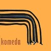
- Oj Vilket Liv!
- Bonjour Tristesse
- Sen Sommar
- Ad Fontes
- Vackra Kristaller
- Medicin
- Feeling Fine
- Vlas pa Skare
- Snurring Bossanova
- Stjarna
- Glod
- En Promenix
- Borgo
- Mode
- Jonas Holmberg
- Marcus Holmberg
- Lena Karisson
- Mattias Norlander
NON RECORDS: NONSCD04 (1993)
#コメダの1995年に出たシングル。STEREOLABをもっとポップにして、電子音減らして、更にもう半ひねりくらい加えたような音です。
ミョーなポリリズムとか、ミョーな進行とか沢山ありますけど、あくまで可愛いポップスです。とても好きなグループです。
後で気付いたんだけど、1stとのカップリングCDになってたみたいです。そっち買えば良かったか。(2003.1.25)
- Fuego de la vida
- Herbamore
- Som i fjol
- En spricka i taket
- Jonas Holmberg
- Marcus Holmberg
- Lena Karisson
- Mattias Norlander
NON RECORDS: NONSCD20 (1995)
#コレが初めて聴いたコメダのアルバム、堀越さんに聴かしてもらいました。
何つっても5曲目「Disko」、イントロの小節の頭が段々わかんなくなって、裏と表がひっくり返るよーな感じ。何度聴いても飽きないです。
他にもストレンジでポップな曲が沢山。よく中古屋の隅っこで安く売ってるんで、買ってあげてください。
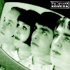
- More Is More
- Fire
- Rocket Plane (Music On the Moon)
- Boogie Woogie/Rock'N'Roll
- Disko
- Top Star
- Light O' My Life
- If
- Frolic
- In Orbit
- Arbogast
- New New No
- Jonas Holmberg
- Marcus Holmberg
- Lena Karisson
- Mattias Norlander
NON RECORDS: NONSCD26 (1996)
#コメダの3枚目、邦盤も出てるみたいっすね。なんだか生音増えた感じで、「奇妙なポップス」感は少し薄れたよーな気もします。
んでも何度も聴いてたら、やっぱりヘン、何かヘン。面白いバンドだなぁ。最近は何してるんでしょう、知ってる方居たら教えてー。
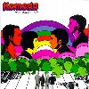
- Binario
- It's Alright, Baby
- Curious
- Cul de Sac
- Living Things
- Flabbergast
- Campfire
- Happyment
- Our Hospitality
- Focus
- A Simple Formality
- Jonas Holmberg
- Marcus Holmberg
- Lena Karisson
- Mattias Norlander
NON RECORDS: NONSCD65 (1998)
#スウェーデンのHapna（aの上にはがマルが付きます）というレーベルから出ている、オルガンとドラムの二人組。えーとHapna自体は割と音響系とかiインプロとか色々なのをリリースしてる所なんですけど（
こんな所にインタビューが）コレはしみじみオルガンとドラムだけのインストです。
北欧系のプログレをちょっとシンプルにして、ちょっと音響系の音を加えたよーな感じかなぁ。自分が聴いてるプログレモノ限定の比較だとWhite WiilowとかBlue Motionとかに似ているよーに思います。
北欧のトラッドっぽい優しいメロディーで、ちょっとミニマルっぽい曲構成。「スゲーかっちょえぇ〜！！」て感じのCDでは無いですけど、しみじみイイです。(2004.2.23)
（→
www.sagorochswing.com）
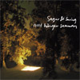
- Aterkomsten
- Lovverk
- Vid en tjarn
- Grottmusik
- Polska fran Insjon
- Langre in i skogen
- Langst inne i skogen
- Det sista aventyret
- Vandring bort
- Flyttfaglar
- Alla sagor har ett slut
- Eric Malmberg (organ)
- Ulf Moller (drums)
Hapna: H.12 CD (2003.10.6)
#試聴機に入っていたのを気に入って買いました。
アルゼンチンの人みたいですね....情報無いんですけど。ライナーにURLが有ったんでアクセスしてみましたけど何もないし、検索しても全然この人の情報見つかりません。ジャケットだと鼻と口しか見えないんで、是非どんな顔か見てみたいんですけど...誰か詳しい方いたら教えて下さいな。
中味は「ボサノバ + 音響」てな感じです。何かR.Wyattに通じるものが有るような儚げな世界かな？ 気分の良い淡い雰囲気です、70分有るCDとは思えないです。(2001.9.26)
- Martin Fierro
- ?Quien?
- El Perro
- !Que llueva!
- La vista
- Quiero
- Mantra del bicho feo
- El desconfiado
- El Zorzal
- El Pastor mentiroso
- Misterio uruguayo
- Vaca que cambia de querencia
- 13
- Sonamos
- Juana Molina
- Alejandro Franov
- John Baxter (electric guitar on 5.)
- Ron Aniello (dulcimer,sampling,percussions,sequence on 8.)
- David Miner (banjo on 8.)
- Fernando Kabusacki (guitars on 14.)
FRAGIL DISCOS: blabla-0002 (2000)
#前作がとても気に入ってた、Juana Molinaの3枚目です。前作から更にゆる〜くなったような感じですけど相変わらず良い感じです。派手さとかは無いんですけど、細やかな音処理で夢見心地な気分。ボーカルのメロディーラインにくっついたり離れたりする微妙な電子音が気持ちいい。
中南米音楽のフリーペーパーに「膝枕系ウィスパーボイス」とか書いてあって、ちょっと成る程。
これ買うときに渋谷のタワレコでインストアイベントを見てきまして、アルゼンチン音響派（ほんとにそんなシーンが有るんだろうか？）
サンプラーみたいなのをゲットしました。このCDにも参加してるA.FranovとかF.Kabusackiとかの音源も入っててちょっと面白かった。んでもやっぱこの人の音が群を抜いて良いような気もしますけど。(2002.9.14)
www.juanamolia.com
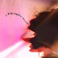
- No es tan cierto
- El cristal
- Salvese quien pueda
- !Uh!
- Tres cosas
- Yo se que
- Isabel
- Zamba corta
- Solo su voz
- Curame
- Filter tags
- El progreso
- Insensible
- Juana Molina
- Alejandro Franov
- Fernando Kabusacki
- Petra Haden (violin on 9.)
- Martin Iannanccone (cello on 12.)
- Francisca Mayol (xylophone on 6.)
La Musica Iberoamericana: LAM-11202 (2002.9.4)
#アルゼンチンのキーボード弾きのソロアルバム・・・みたいです。（またしても詳しい情報無し）
なんか検索かけたら、「ボアダムズのヨシミが選んだ2000年ベストCD」みたいなのに入ってたみたいですね。
キーボードは結構爽やかなジャズ（一瞬Pat Methenyかと思うようなのも有った）なんですけど、奔放なパーカッションが入るととても独特な世界になります。クレジットは3人だけだったんですけど、本当に3人だけで録音したんだろうか？
色んな音が交じり合っていて次に何が来るか全然わからないよーな音楽。かと言ってフリージャズみたいな雰囲気も無いし、プログレともちょっと違うし。
特に4曲目はシロフォンとパーッカッションが交錯しながら盛り上がっていく、えらいかっちょいい曲。KILLING TIMEの「既知との遭遇」みたいな。(2002.9.18)
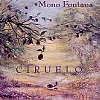
- Gente Que Aun Duerme
- Bahia Carmesi
- Desertor
- Cuscus
- Aqui,Despues
- Pecados Del Mundo
- Sobre La Espina
- Entre Ellos Y Yo
- Burrito
- Santiago Vazquez (percussions)
- Martin Iannaccone (cello)
- Mono Fontana (synthesizers)
MELOPEA DISCOS: CDMSE-5120 (1998)
#渋谷タワレコ6階のトイポップの試聴機の所に有りました。アルゼンチンの人みたいです、何かダンスの音楽・・・？良くわかんない。
いやそのエレクトロニカじゃ無いです。チェンバーとかカンタベリーっぽい所も有るような、でもリズムはドラムンベースみたい、愉快なインスト音楽。ちなみにAxel Krygierはキーボードの人みたい。（前Juana Molinaのイベントの時に貰った、中南米音楽のサンプラーに一曲入ってた）
ジャケットも何か間抜けな感じでサイコー（というか最初はこのジャケに惹かれた）なんで左の女はパンツ姿なんでしょう？
とりあえず
ココで試聴できるみたい。(2003.6.4)
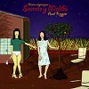
- Que azul es el cielo!
- Jungla de pasto
- Amanece
- Vuelo
- Autoerotico
- Tristecito
- Final
- Final version 2 (Husares al ataque!)
- Axel Krygier
- Martin Ianncone (on 2.)
- Leticia, Ines y Diana (on 3.)
- Christian Bassso (electric banjo on 4.6.)
- Kevin Johansen (acoustic guitar on 4.)
- Juanhi Baleiron (acoustic guitar on 4.)
- Patrick Liotta (cotnrabass on 7.)
los anos luz discos: LAL017 (2003)
#タワレコ渋谷6Fのエレクトロニカコーナーにてちょっと前から気になっていたスペインの人達です。
生音や自然の音を多用したエレクトロにスペイン語の女性ボーカルが乗っかります。スペイン語の微妙な語感が気持ちイイみたい。アルバム全体としてはちょっと散漫なような気もしますけど、なんだか凝った手芸品みたいな感じは好感持てます。
あと、ジャケットが可愛いです。後ろの透けるセロハン紙に裏印刷してあって、非常に好きな感じです。レコードじゃなくってもこんな感じの凝ったデザインとか色々出来ると思うんですけど、日本のCDだとなかなか見かけないですね。紙ジャケ仕様の再発盤とかばっか出してなくてもいいよーな気がします。
んでレコード会社のサイトが
www.foehnrecords.com。このサイト、淡い色彩のデザインはとてもイイんですけど、FLASHで小さいくて淡い文字。おじいさんもう読めません。(2002.9.3)
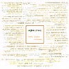
- alfa
- las parabras sin te jado
- erepitation
- citizen
- sa lisiere
- sin desayunar voy de mueeo de ascensor en mueeo de ascensor. una taza de r erispies
- zia (version campestre)
- asiento inquieto/inemodo
- deneb
-
- ex
- belen
- alvaro
- emillio
- arjones (violin)
- hector (trumpet)
foehn records: foehn003 (2002)
#これは...なんだろ、バンド名にひかれて渋谷のBANANA RECORDSで買ったんですけど。JADE TREEというレーベル(TOITOSEとかGASTER DEL SOLとかの周辺のレーベルみたい)音響系というより、MUFFINSとかDOCTOR NERVEとかその辺りのKnitting Factory系のバンドに近い音に感じました。
ロック...というか所謂プログレに近い音じゃないかなー？と思うんですけどコイツら。(2000.4.1)
- 4/13/72
- flip-book oscilloscope
- the doodler
- robotronic
- (got my) rock pants on
- on form and growth
- swiss grid
- Justin Chearno
- Scott Desimon
- Gerard Fuchs
QUATTRO DISC: quattro-016 (2000.1.14 - JADE TREE)
#近所の中古CD屋さんで、ジャケにひかれて購入。"綺麗な紙から覗く四角の窓から猫の写真"というモノ。音はJim Reoという人のソロプロジェクト、ちょっとネオアコっぽくってちょっとエレクトロな感じのふわふわしたポップソングです。
最近こういう音多いみたいで、エコーが深くかかった音処理はいかにもであんまり好きじゃないです。音響派っぽい曲も中途半端で少し物足りない、リズムの打ち込みがちょっと気持ち悪かったり。でも、1曲目とか4曲目のアコギの響きの綺麗な曲は結構好きです。4曲目の"ゆらぎ"な感じなんかナカナカ。(2000.2.8)
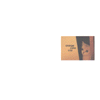
- Valentine Love Letter
- Introversion
- Small World We're Living In
- Water Medley
- Holy Stream (Of Consciousness)
- A Summer Waterfall
- Spirit Of The River
- A Million Dreams
- Rothko
- Music For Dining
- It Won't Be Long Until I See You Again
- Into The Rising Sun
- Glorified Abyss
- Your Sweet Smile
- I Am Still Waiting For You To Come Here
- Little Baby Star
- Another Frozen Flower
- Could It Be I'm Still Falling In Love With You
- Santa Monica Boulevard
- Sleepytime Song
- Broken Valentine
all songs by Jim Rao
TOKUMA JAPAN COMMUNICATIONS: TKCB-71383 (1998.6.10)
#タワレコ渋谷にて、試聴機で聴いて良かったので。bonjour recordsという所のコンピレーションです。なんだか"SOUND GOES CONTEMPORARY"とか書いてあります。Pascal Comelade(トイピアノの人、スゴイ上手い)とかStock,Hausen & Walkmanとか結構有名な人もいれば全然名前の聞いた事も無いような人もいます。竹村延和とかも(実はあんまり好きじゃないんだけど)一緒に入ってます。
ポップですけどちょっと実験的で変わっています、いろんなフィールドの人達からのコンピなのに結構統一感があります、何か通じるモノが有るというか。私は1曲目のChari Chari Chariの曲が可愛くて好きでした。(2000.6.4)
- Chari Chari Chari/Tiki Tiki Too
- Soulstance/Truth, Simplicity & Love
- Jane and Barton/I want to be with you
- Bruce Haack/Army Ants in Your Pants
- Double Famous/Jump Up
- Leo Cesari/La Beguine du Mac
- Gak Sato/Hip wagging, Foot Shuffling
- Stock,Hausen & Walkman/Vtol
- Oleg kostrow/Ein Kleines Bettlerliedchen
- Alenjandra and Underwood/Kid's Playing Baseball, East Village, NYC.
- Zap Mama/Illioi
- Pascal Comelade/Dali's Mustache with Gitano's Chaussure
- 竹村延和/Long Long Night
- Pascal Comelade/Moritat Von Mackie Messer
- Raymond Scott/When will it end?
- 椎名謙介/Street Song
- Calm/Sitting on the Beach
Compiled by 小松康弘
bonjour records: boncd-002 (2000.6)
#弟に「最近何か新しいの無い？」とか言う話で。
PLOPとかいうエレクトロニカなレーベルのオムニバス。最近電車で良く聴いてるんですけど、コレ聴いてるとすぐ寝ちゃう。
似たような音が多くてちょっとうんざりするけど、fonicaの6曲目とかは結構好きかも。ギターの入り方とか、きちんと曲構成が有るよーな感じで。
あと5曲目も女の人の声が緩い感じで良かったです、何かで聴いたような気がするけど思い出せない。(2002.8.18)
PLOP
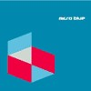
- oppon soy/onpack
- nuecynic/taisuke matsuo
- waltzing my ~/the rip-off artist
- stitch/drummatic
- tous les types sont adorables/dorine_muraille
- perch/fonica
- comp track1/omb
- post-sum/jetone
- crystal of water/waki
- bingolingo/geoff white
- spher./mondii
- 8412/neina
- dialog/yuzo kako
- rusl/fonica
PLOP: PLIP-3004 (2002.5)
#タワレコでJuana Molinaのインストアイベントの時に彼女のCDを買ったらついてきました。アルゼンチンの音響派のサンプラーCD-Rです。
えーとJuana Molinaの他では、Mono Fontanaがかっこいい。いや本気で好みかもコレ。Mono Fontana/Cirueloってやつ、パスコアルとかザッパとかキリングタイムとかみたい。そのうち探して買います。
あんまり音響派とは言いがたいのも入ってますけど、最近中南米系の音が好きなので良いサンプラーになったかも。
- Juana Molina/Martin Fierro
- Juana Molina/No Es Tan Cierto
- Fernando Kabusacki/Welcome To My Coffee House
- Fernando Kabusacki/El Globo Rojo
- Alejandro Franov/En Alta Mar
- Alejandro Franov/Pasando El Mar
- Leandro Fresco/Poma
- Sebastian Escofet/Claire De Lune
- Veronica Condomi/Zamba Para La Guanguita
- Nuria Martinez,Fernando Kabusacki,Valdo Delgado/Solarizado
- Nora Sarmoria/Culpa Tuya
- Mono Fontana/Cuscus
- Fernando Semalea/Malika
- Santiago Vazquez/Buey
- Axel Krygier/Silbad El Calipso